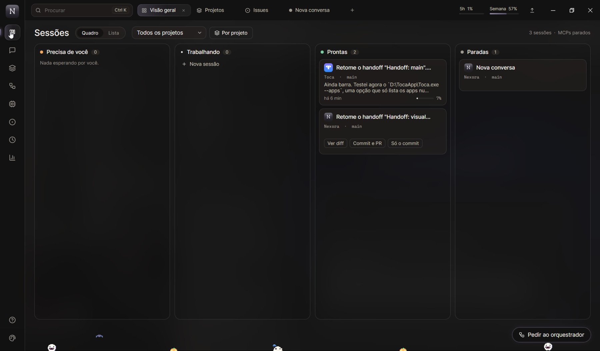
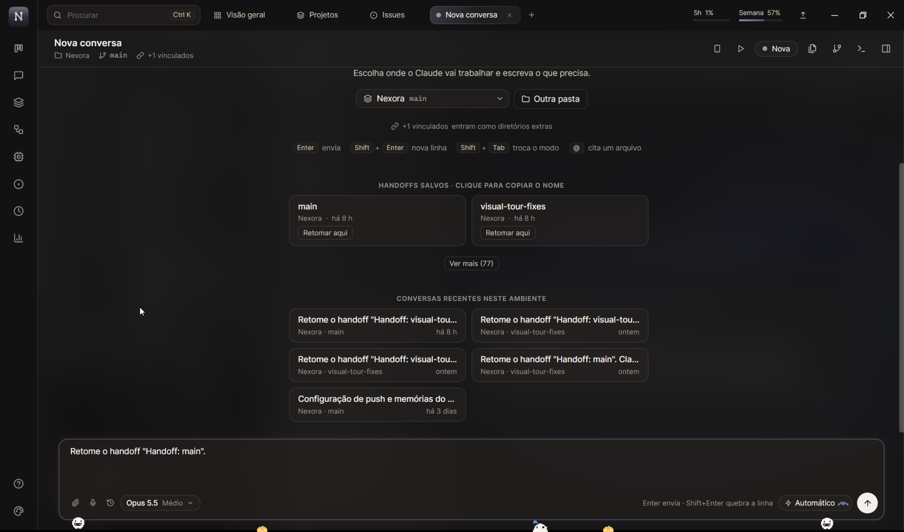
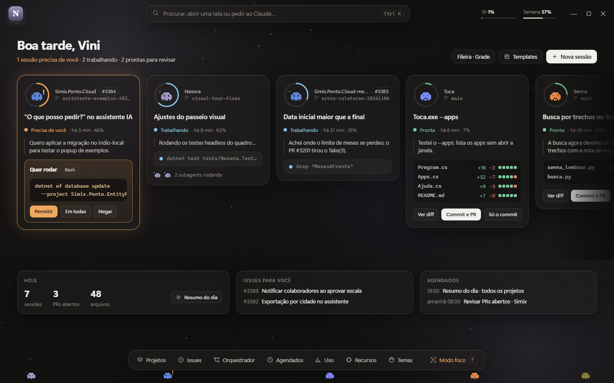
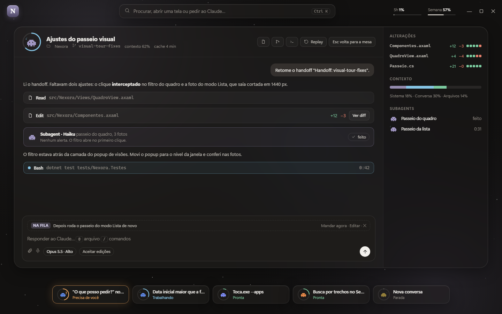
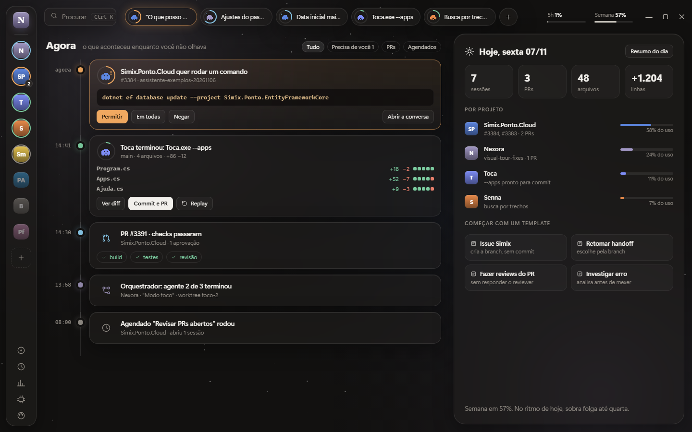
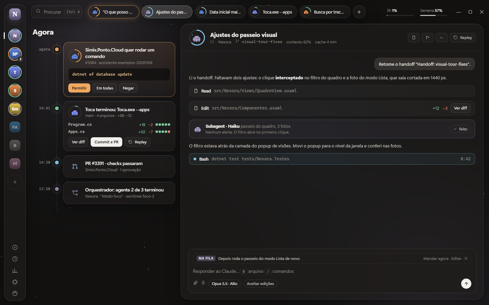
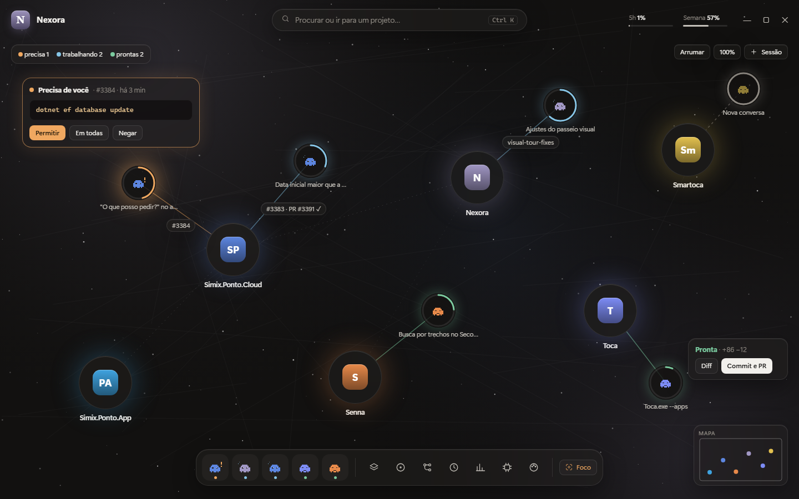
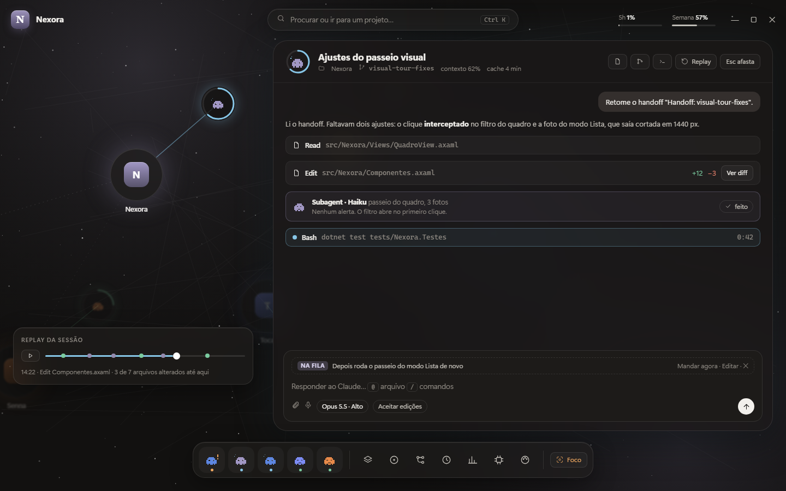

Mesmo tema escuro, vidro e cores de hoje. Muda o esqueleto: sai o trilho de ícones e as abas de arquivo, entram os mascotes como avatar de cada sessão e o anel de contexto. Cada conceito tem a tela inicial e a tela com uma sessão aberta. Os dados são de exemplo.


Sem trilho e sem abas. As sessões viram uma fileira de cartões grandes, ordenada por urgência, com Permitir, diff e Commit dentro do cartão. As telas de apoio ficam num dock embaixo. Abrir uma sessão expande o cartão, e as outras descem para uma trilha.


Uma coluna fina de projetos à esquerda, com anel de estado em cada ícone. As abas viram chips vivos com o mascote. O centro é uma linha do tempo do que aconteceu, onde dá para agir. À direita fica o painel do dia, que vira a conversa quando uma sessão abre.


O canvas do orquestrador vira a tela inicial. Projetos são nós grandes, sessões orbitam com o mascote e o anel, e as linhas levam a issue, a branch e o PR. Abrir uma sessão afasta o resto e ancora a conversa ao nó. O replay aparece como uma linha do tempo dos passos.

